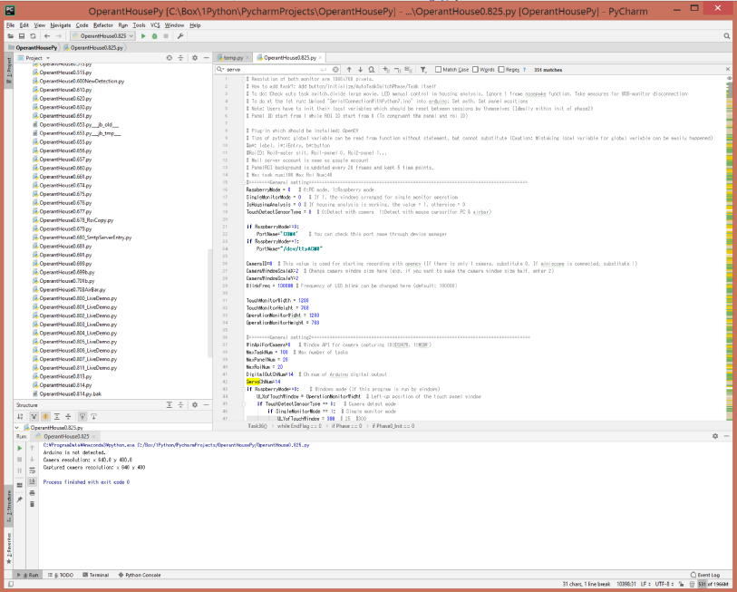
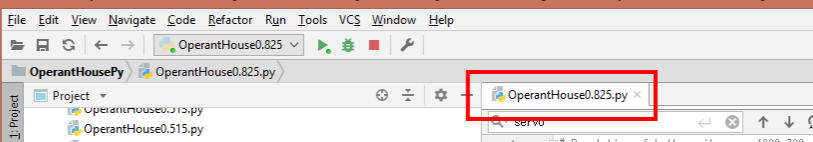
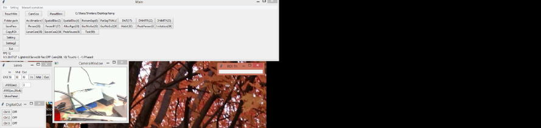

1. 準備
※このページではOperantHouse0.927_Tutorial.pyを用いて解説します。またチュートリアル終了後のコードはOperantHouse0.927_Tutorial_final.pyになります。
ここではﾊﾟﾈﾙをタッチすると水が貰える必要最小限のコードで書かれた課題(90)のコードの解説を行い、次にコードを追加してより複雑な課題に改良する事を通してどのようにすればオリジナル課題に改良出来るかと解説して行きます。
なおプログラミングはラズパイ環境では行いづらいのでここではWindowsPCを用いた場合の解説を行います。
まずはプログラミングの環境を構築するため、Anaconda3とPyCharmをインストールしてください(PyCharmのFile -> Setting -> Project:*** -> Project InterpreterでAnacondaのpython.exeを指定するのを忘れないで下さい)。
(他のエディターを使っている方はそちらをお使いください)
次にOperantHouseのArduinoからラズパイへ向かうUSBケーブルをPCに接続して下さい。またカメラのUSBケーブルも同様にPCへ接続してください。
これでPCがラズパイの代わりにOperantHouseを制御できる状態になります。
PyCharmのProject windowからオペラントハウスの本体プログラムであるOperantHouse*.***.pyを開くと右側のコードが表示されます。
長いコードですが、全てを理解する必要は全くありません。

PCでプログラムをテスト実行するため、冒頭の値を変更します。
#========General setting====================================================================================
RaspberryMode = 0 # 0:PC mode, 1:Raspberry mode
PCでオペラントハウスを使用するには0にしてください。
SingleMonitorMode = 0 # If 1, the windows arranged for single monitor operation
拡張画面を含めて作業スペースが横2500ピクセル以上の場合は0,そうでない場合は1にしてください。0の場合はオペレーションウィンドウが左側、タッチｽｸﾘｰﾝｳｨﾝﾄﾞｳが右側に現れます。
1の場合、両者が重なって現れます。
IsHousingAnalysis = 1 # If housing analysis is working, the value = 1, otherwise = 0
この数値が1だと課題外の天井照明はSettingで指定した時間によって自動的に点灯/消灯されます。
TouchDetectSensorType = 0 # 0:Detect with camera 1:Detect with mouse cursor(for PC & airbar)
1にするとセンサーバーでタッチスクリーンへのタッチを検出するモードになります。
if RaspberryMode==0:
PortName='COM4' # You can check this port name through device manager
このPortNameにはPCがArduinoをどのポートで認識しているかを入力します。ポートは以下の方法で調べられます。
コントロールパネル → 大きなアイコンで表示し、デバイスマネージャー → ポート(COMとLPT) → Arduino Uno(COM*)
"COM*"がArduinoと接続しているポートなのでこれをPortNameへ代入してください。
CameraID=0 # This value is used for starting recording with opencv (If there is only 1 camera, substitute 0. If miniscope is connected, substitute 1)
PCに複数のカメラが接続されている場合（ノートPCの内臓カメラも含む）、それぞれのカメラに番号が0,1,2...と順に振られます。OperantHouseのカメラにどのIDが振られているか分からない場合は取り敢えず0のままにしておいてください。
ではOperantHouseを起動しましょう。プログラムのタブを右クリックしRunを選択します（ファイルの名前変更もここでできます）。

このように画面が出てくれば成功です。

ここでこの先教材として使う課題90を実行してみて、どのような課題かチェックしてみて下さい。
ﾊﾟﾈﾙをタッチすると報酬が貰えるというシンプルな課題です。
課題の挙動を理解したら、Exitボタンを押してプログラムを一旦終了しましょう。